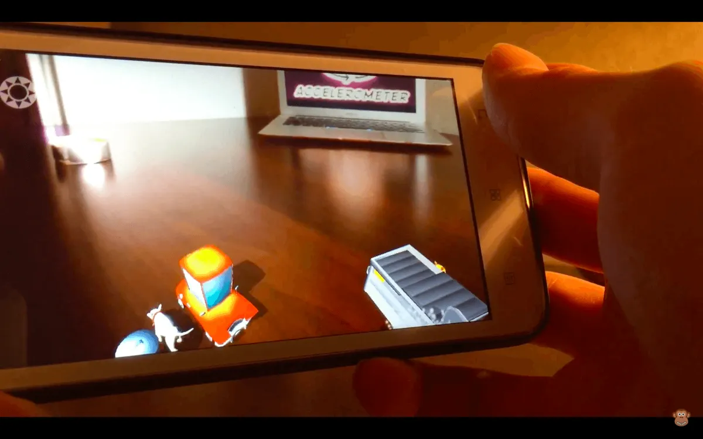

Rent-A-Bee offers a new service where we put beekeepers in contact with people with extra space that would benefit from some beehives!
So the question is, why give up the backyard? Well, it's good for the environment, it helps pollinate your garden, and you will be able to get your own honey! Sound interested!?
Heres what we look for:
Check the suitability of our land and place a beehive virtually with our tool! 